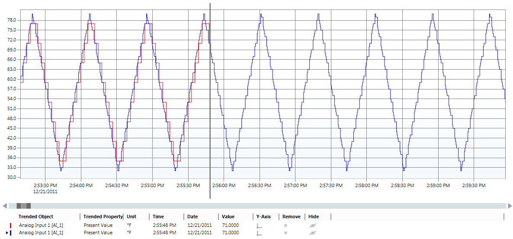
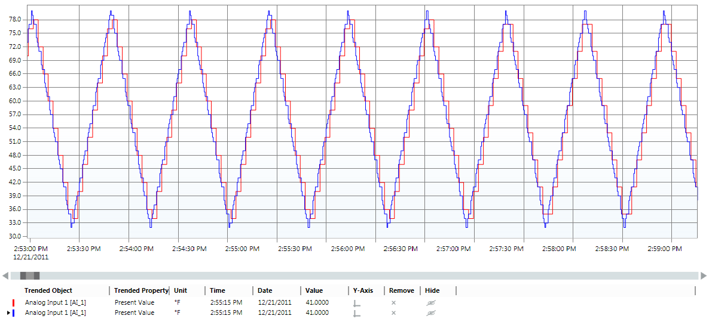

Upload Trend Data from the System Browser
- In System Browser, select Application View.
- Select Applications > Trend > Offline Log Objects.
- Select one or more trend log objects or trend log multiple objects.
- The trend view displays as follows. The red curve indicates that the offline trend data is not yet updated. The blue curve indicates the online trend data.

- The properties of the trend log objects or trend log multiple objects display in the Extended Operation tab.
NOTE: If you select more than one object, the properties display only if both are of the same type, that is, either trend log objects or trend log multiple objects. - Click the Extended Operation tab.
- Perform any one of the following steps:
- To upload the trend data related to all the trend log objects or trend log multiple objects, navigate to the Log Enable property and click Collect.
- To upload the trend data related to a specific trend log object or trend log multiple object, expand the Log Enable property and click Collect.
- The offline trend data from the trend log objects or trend log multiple objects is uploaded to the management station. The red curve indicates the updated Offline Trend data. The blue curve indicates the online trend data.
